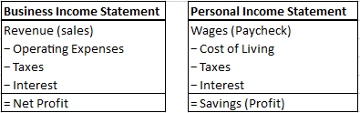

@rawbooty2 on X.com
Version 1.0 · January 14, 2026
The Business Model of: “Life”
How to Think About Saving Money
We are often taught about business using simple examples, like a lemonade stand. You sell a product. You earn revenue. You pay expenses. What is left is profit. What these examples don’t teach is that your life works the same way.
Your life is a small business; you are a business franchise. If your name is John or Debbie, this paper is about learning how to think like John Inc. or Debbie Inc.
So, What Is the Product You Are Selling?
Every business sells something. In life, as an employee, the product you sell is your time. The money you receive for selling your time is called a wage. It comes to you as a paycheck. Your paycheck tells you how much money you earned by selling units of your time.
To keep it simple, every hour you work is one unit of product.
Imagine it takes one hour to bake and sell one cookie. One cookie equals one hour of work. If each cookie sells for $20, then each hour is worth $20. In the same way, each hour you work is one unit you sell.
The Income Statement
Businesses understand their finances using an income statement. The same structure applies to life.

What remains at the bottom is what matters. Earning Profit is earning freedom. Earning a Loss is a path to future dependency.
What Are Your Business Expenses?
No business keeps all of its revenue. There are expenses required just to stay in business.
In life, these are the expenses that make it possible for you to sell your time. They include food to live, shelter to protect you from heat, cold, and weather, transportation to get to work and buy what you need, clothing and hygiene to function in a work environment, and taxes.
These are essential expenses. Different choices can meet the same need at very different costs.
A Lamborghini and a Ford are both transportation. A mansion and a studio apartment are both shelter. They serve the same purpose, but at very different costs.
A Ford might cost you $0.50 per mile. A Lamborghini may cost $5.00 or more per mile. A studio apartment might rent for $50 per night, while a mansion may cost $500 per night or more.
The higher your essential expenses, the more revenue you must earn just to stay in business.
How Do You Earn a Profit?
Profit is what remains after all expenses are paid. In life, profit is the money left over after you pay your essential expenses. This is your real income, not the number printed on your paycheck. This is what becomes savings.
Most businesses operate with profit margins between 5% and 12%. Below 5% is weak. Above 12% is exceptional.
You can calculate your own profit margin the same way. If you earn $50,000 and save $5,000, your profit margin is 10%. Not bad.
If nothing is left over, you are not a profitable business.
Borrowing and Losses
Borrowing introduces a new kind of expense: interest. Interest increases your base cost of living.
When you borrow, you are selling cookies you have not yet baked. You are committing hours of your future time before it arrives. In life, your supply of time is fixed. Nothing you do will create more of it.
More debt means fewer cookies you get to keep for yourself later. It means less life you get to spend the way you want to spend it.
A business that must borrow to survive is a loss-making business. Profit ends the need to borrow.
Profit allows you to sell fewer hours of your time. This is why some people stay broke and others retire early.
How Profit Grows
There are only two ways any business increases profit. First, reduce expenses. Second, increase the value of what it sells. You can reduce expenses, but only to a point. There is a limit to how low essential costs can go.
There is no fixed limit to how valuable your time can become. As the value of your time increases, each hour you sell generates more revenue. Higher revenue, with controlled expenses, produces profit.
The Final Lesson
Earlier, we treated your time as a commodity. This was useful, but it is not always true.
Your time is only a commodity if someone else can easily do the same task, in the same amount of time, with the same level of quality. When this is true, your work is easily replaced. When your work is easily replaced, you must accept the market wage. When this is not true, your time is not a commodity.
You should always be looking for ways to increase the value of your time.
An Important Clarification
Markets value results, not effort.
If you cannot perform a task at the level the market demands, your product is seen as lower quality. A lower-quality product must be sold for less, or sold into a market with lower expectations. This means your product — you — are a low-quality product in that market.
To increase the value of your time you must either a) Improve the quality of your product or b) find a market with lower standards into which you can sell your product.
Closing Note
Once you understand how profit is earned, the next question is how to invest it.
For that, I recommend reading Richard Russell’s Rich Man, Poor Man.